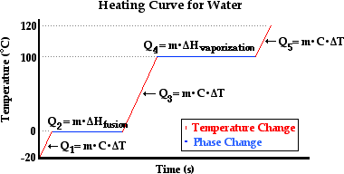
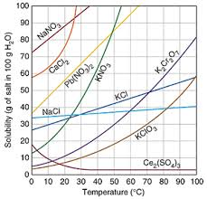
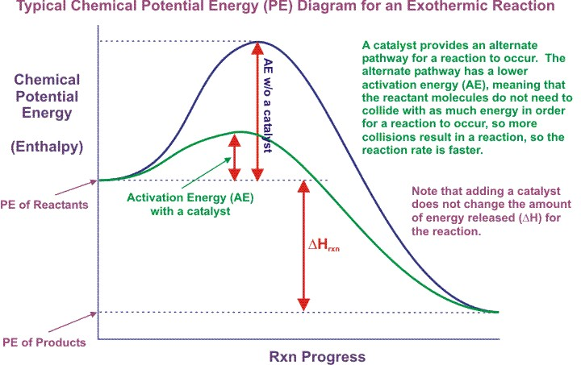

Chemistry
Units
Unit 1=
Compositions of Matter
Matter is anything that takes up space and possess a certain mass.
Matter can have different properties, either physical (observed) or chemical (take place after chemical reactions).
There are two types of physical properties: intensive and extensive.
Extensive properties are dependent on the amount of matter in the sample, such as mass.
Intensive properties do not depend on the amount of matter, such as temperature and color.
Atomic Theory
Let's play name that scientist (who contributed to the atomic theory)!
Who was the first to challenge Aristotle's beliefs in regards to the composition of matter?
He even coined the term "atom".
→ Democritus
Who expanded upon Democritus' theories with modern knowledge?
Unlike his predecessor, his ideas were taken seriously.
→ Dalton
Who created the "plum pudding model" and discovered that there were negative and positive portions of the atom?
→ J.J. Thomson
Who discovered that atoms were made mostly of empty space with his gold foil experiment?
→ Rutherford
Who discovered the neutron?
→ Chadwick
What nerd spent months trying to discover the charge of the electron with his oil drop experiment?
→ Millikan
Who greatly expanded the realms of physics and quantum mechanics?
→ Bohr
Unit 2=
Periodic Trends
• Ionization Energy: the amount of energy needed to remove an electron from an atom
◦ increases across the period, decreases as the period number increases
• Atomic Radius: the radius of the atom
◦ decreases across the period, increases as the period number increases
• Electronegativity: desire to gain an electron
◦ increases across the period, decreases as the period number increases
Quantum Numbers
What are quantum numbers?
Quantum numbers are used to identify the location of electrons.
• the principle quantum number (n): indicates the energy level occupied by the electron
• the angular quantum number (l): indicates which orbital the electron is in
◦ s-orbital: holds 2 electrons per energy level [l = 0]
◦ p-orbital: holds 6 electrons per energy level [l = 1]
◦ d-orbital: holds 10 electrons per energy level [l = 2]
◦ f-orbital: holds 14 electrons per energy level [l = 3]
• the magnetic quantum number (ml): indicates the orientation within an orbital
◦ Imagine the orbital is an array of electrons, where each location holds two electrons.
Each orbital has 2l + 1 locations (e.g. d-block has 5 locations for 10 total electrons with l = 2).
◦ The middle location is considered ml = 0. Each location to the left decreases by 1,
and increases by 1 to the right.
• the fourth quantum number indicates the spin of the electron, which is either -½ or ½
◦ Electrons in each location of the orbital must spin in opposite directions,
which accounts for the repulsion of the electrons.
◦ Each location is filled with positive-spin electrons first,
then is filled with negative-spin electrons.
Aufbau Principle:
in the ground state of an atom or ion, electrons fill atomic orbitals of the lowest available
energy levels before occupying higher levels (few exceptions)
Hund's Rule:
every orbital in a subshell is singly occupied with one electron before any one orbital is doubly occupied,
and all electrons in singly occupied orbitals have the same spin
Pauli Exclusion Principle
two or more identical fermions (particles with half-integer spin) cannot occupy the same quantum state within a quantum system simultaneously
Heisenberg's Uncertainty Principle:
you can never simultaneously know the exact position and the exact speed of an object
Electron Configuration
Ever heard of spdf?
Well, there's an easier way to notate the configurations.
It is known as noble gas notation.
Noble gas notation starts with the noble gas from the previous period
(i.e. start with neon for sodium).
Then, finish the spdf configuration (i.e. [Ne]3s1 for sodium).
The following are examples:
• Titanium: [Ar]4s23d2
• Selenium: [Ar]4s23d104p4
Speed / Frequency / Wavelength
◦ c (m/s) = ν × λ
◦ ν (Hz [s-1]) = c ÷ λ
◦ λ (m) = c ÷ ν
c is the speed of light,
ν is wave frequency,
and λ is wavelength
E (Joules) = h × ν
E is energy, and h is Planck's Constant (6.626 × 10-34)
Unit 3=
Ionic Compounds
What are they?
Ionic compounds are compounds that are formed from a positively charged ion bonding with a negatively charged ion.
Naming?
To name an ionic compound, you take the name of the cation (positive [+] ion) and add the name of the anion (negative [-] ion).
Cation names are the same as the original element, and anion names are the root of the element with the suffix -ide.
What are the properties of ionic compounds?
Ionic compounds have high melting points and can conduct electricity when dissolved in water.
When they are dissolved in water, the cation(s) and anion(s) dissociate, separating into its components.
This forms electrolytes, which are the charged ions that are dissolved in solvent.
Polyatomic Ions
What are they?
Polyatomic ions are charged molecules that are covalently bonded.
When a hydrogen ion (H+), also known as a PROTON bonds with a negative anion,
it forms an acid.
When the anion ends with -ide, the acid is named using HYDRO-[root of anion]-IC ACID.
When the anion ends with -ite, the acid is named using [root of anion]-OUS ACID.
When the anion ends with -ate, the acid is named using [root of anion]-IC ACID.
Covalent Bonds
What are covalent bonds? Covalent bonds are bonds that form when two nonmetals (possibly metals) share electrons, usually to attain the configuration of noble gases.
Water, or H2O is a molecular compound that forms when two hydrogen atoms bond with oxygen. When each hydrogen atom bonds with one electron of oxygen, they acquire the electron configuration of helium (2 valence). The oxygen atom gains two electrons, and before had six valence electrons. This gives oxygen the electron configuration of neon (8 valence).
There are different types of covalent bonds: single, double, and triple.
An example of a single bond is H2, in which the hydrogen atoms share ONE electron EACH.
An example of a double bond is O2, in which the oxygen atoms share TWO electrons EACH.
An example of a triple bond is N2, in which the nitrogen atoms share THREE electrons EACH.
What are lone pairs? Lone pairs are pairs of electrons that stay unbonded on the central atom.
For example, water, or H2O, is made up of two hydrogen and one oxygen atoms. Oxygen has six valence electrons, and hydrogen has one.
6 − 2(1) = 6 − 2 = 4 → 2.
Since there are four left over electrons on oxygen, there are two lone pairs.
VSEPR (Valence Shell Electron Pair Repulsion)
What is an electron group? An electron group is either a covalent bond (whether it be single, double, or triple, it is still one group) or a lone pair on the central atom.
| # Molecular Bonds | # Lone Pairs | # Electron Groups | Electron Geometry | Molecular Geometry | Bond Angles | Example | Image of Example | Polarity of Example |
|---|---|---|---|---|---|---|---|---|
| 2 | 0 | 2 | linear | linear | 180° | O2 |  |
nonpolar |
| 3 | 0 | 3 | trigonal planar | trigonal planar | 120° | BF3 |  |
nonpolar |
| 2 | 1 | 3 | trigonal planar | bent | 120° | SO2 |  |
polar |
| 4 | 0 | 4 | tetrahedral | tetrahedral | 109.5° | CH4 |  |
nonpolar |
| 3 | 1 | 4 | tetrahedral | trigonal pyramidal | 109.5° | NH3 |  |
polar |
| 2 | 2 | 4 | tetrahedral | bent | 109.5° | H2O |  |
polar |
| 5 | 0 | 5 | trigonal bipyramidal | trigonal bipyramidal | Equatorial: 120° Axial: 90° |
AsF5 |  |
nonpolar |
| 4 | 1 | 5 | trigonal bipyramidal | seesaw | Equatorial: 120° Axial: 90° |
SF4 |  |
polar |
| 3 | 2 | 5 | trigonal bipyramidal | T-shape | 90° | ClF3 |  |
polar |
| 2 | 3 | 5 | trigonal bipyramidal | linear | 180° | XeF2 |  |
nonpolar |
| 6 | 0 | 6 | octahedral | octahedral | 90° | SF6 |  |
nonpolar |
| 5 | 1 | 6 | octahedral | square pyramidal | 90° | BrF5 |  |
polar |
| 4 | 2 | 6 | octahedral | square planar | 90° | XeF4 |  |
nonpolar |
Van der Waals Forces
What are the two van der Waals forces? The two van der Waals forces are: dipole interactions and London dispersion forces.
Dipole interactions are the stronger of the two forces, in which polar molecules are attracted to those of opposite charge.
London dispersion forces are caused by the motion of electrons where instantaneous dipoles form on molecules (even nonpolar ones). This forces compounds that should normally be gas to be a liquid (e.g. gasoline). Furthermore, larger atoms have larger dispersion forces (F and Cl are gases, Br is a liquid, and I is a solid).
Hydrogen bonds are a special kind of force. They are the strongest molecular force (still weaker than ionic bonds and 5% the strength of covalent bonds). This force makes water a liquid when it should be a solid, due to hydrogen loses volume.
Unit 5=
Moles
What is a mole? A mole is a unit of number. It is the number of Carbon-12 atoms in 12 grams, and can be applied to any pure substance.
1 mol = 6.022 × 1023 ← Avagadro's Number
1 mol of gas = 22.4 L
Molar mass of an atom can be found through taking the atomic mass of an atom and changing the units from amu to g/mol.
Molar mass of a compound can be found by doing the steps above, multiplying each elemental molar mass by the subscript following that atom, and adding the results together.
Example: AlPO4: Al[27 g/mol] + P[31 g/mol] + O[4×(16 g/mol)] = 27 g/mol + 31 g/mol + 64 g/mol = 122 g/mol
How do I find the amount of moles of a substance when given its quantity (in grams)?
Simple. Use dimensional analysis.
Example: 61 grams of AlPO4: 61 g⁄1 × 1 mol⁄122 g = 61
How do I find the mass of collection of a certain substance given the quantity (in mol)?
Simple again. Use dimensional analysis. You'll get it eventually.
Example: 0.5 mol of AlPO4: 0.5 mol⁄1 × 122 g⁄1 mol = 0.5(122)
How do I find the number of atoms/molecules in a collection of a certain substance given the quantity (in grams)?
Okay, this one's not as simple as the others, but it's still pretty easy.
Example:
61 grams of AlPO4: 61 g⁄1 × 1 mol⁄122 g = 61
How do I find the number of atoms/molecules in a collection of a certain substance given the quantity (in mol)?
Even easier. Get a grip.
Example:
0.5 mol of AlPO4: 0.5 mol⁄1 × 6.022 × 10^23 molecules⁄1 mol = 0.5
Do you understand what I'm trying to say? Dimensional analysis is key to finding numbers when dealing with moles.
Chemical Reactions
There are FIVE types of chemical reactions: synthesis, decomposition, combustion, single-replacement, and double-replacement.
QUIZ
1. Which reaction is the following equation?
2Na(s) + Cl2(g) → 2NaCl(s)
A) Synthesis
B) Decomposition
C) Combustion
D) Single-Replacement
E) Double-Replacement
2. Which reaction is the following equation?
CuCO3(s) → CuO(s) + CO2(g)
A) Synthesis
B) Decomposition
C) Combustion
D) Single-Replacement
E) Double-Replacement
3. Which reaction is the following equation?
MgSO4(aq) + 2NaOH(aq) → Mg(OH)2(s) + Na2SO4(aq)
A) Synthesis
B) Decomposition
C) Combustion
D) Single-Replacement
E) Double-Replacement
4. Which reaction is the following equation?
C4H8(s) + 6O2(g) → 4H2O(l) + 4CO2(g)
A) Synthesis
B) Decomposition
C) Combustion
D) Single-Replacement
E) Double-Replacement
5. Which reaction is the following equation?
2Cu(s) + O2(g) → 2CuO(s)
A) Synthesis
B) Decomposition
C) Combustion
D) Single-Replacement
E) Double-Replacement
6. Which reaction is the following equation?
Zn(s) + CuSO4(aq) → ZnSO4(aq) + Cu(s)
A) Synthesis
B) Decomposition
C) Combustion
D) Single-Replacement
E) Double-Replacement
How do I balance a given equation?
Seriously? Okay, I admit that it's difficult in some situations. However, it is relatively simple when it comes to balancing MOST equations.
H2O + O2 → H2O2
Step 1: Count the number of each element's occurrence in each compound
H[2]O[1] O[2] → H[2]O[2]
Step 2: Find a way to make the numbers the same, but elements of the same compound must be multiplied by the same factor
H[4]O[2] O[2] → H[4]O[4]
Step 3: Factor the multiplier out
2H2O + O2 → 2H2O2
REMEMBER: Br2 I2 N2 Cl2 H2 O2 F2
These elements ALWAYS, ALWAYS, ALWAYS (times infinity) appear as diatomic molecules when they are not bonded to another substance.
QUIZ
Balance the following equations:
1. C4H8(s) + O2(g) → H2O(l) + CO2(g)
2. Fe(s) + Cl2(g) → FeCl3(s)
3. Fe(s) + O2(g) → Fe2O3(s)
4. FeBr3(aq) + H2SO4(aq) → Fe2(SO4)3(s) + HBr(aq)
5. C4H6O3(s) + H2O(l) → C2H4O2(s)
6. H2SiCl2(aq) + H2O(l) → H8Si4O4(s) + HCl(aq)
How do I write a fully-balanced equation when given a word problem?
Let me say this slowly: that's... a... great question! Follow the steps below:
Step 1: Create a skeleton equation (unbalanced w/o products)
Step 2: Determine the type of reaction and predict products
Step 3: Balance the equation
Step 4: Determine the states of matter of the products
Example:
I take a solution of dissolved copper (II) sulfate. I then drop zinc metal into the solution. Create an equation for this scenario.
Step 1: CuSO4(aq) + Zn(s) → ???
Step 2: Single-Replacement (AB + C → CB + A); therefore, products are ZnSO4 + Cu
Step 3: CuSO4(aq) + Zn(s) → ZnSO4 + Cu
Step 4: CuSO4(aq) + Zn(s) → ZnSO4(aq) + Cu(s)
RULE: To determine the precipitate of a double-replacement reaction that takes place in solution (aqueous), use the solubility rules (can be found online).
A complete ionic equation is a chemical equation with every element coverted into its ionic counterpart.
Example:
MgSO4(aq) + 2NaOH(aq) → Mg(OH)2(s) + Na2SO4(aq) becomes
Mg2+(aq) + SO42-(aq) + 2Na+(aq) + OH-(aq) → Mg2+(s) 2OH-(s) + 2Na+(aq) + SO42-(aq)
A spectator ion is an ion that does not change states from changing from a reactant into a product (in the complete ionic equation).
Example:
Mg2+(aq) + SO42-(aq) + 2Na+(aq) + 2OH-(aq) → Mg2+(s) 2OH-(s) + 2Na+(aq) + SO42-(aq), where the spectator ions are 2Na+(aq) and SO42-(aq).
Therefore, the net ionic equation is: Mg2+(aq) + 2OH-(aq) → Mg(OH)2(s)
Empirical and Molecular Formulae
How do I find the empirical formula of a compound given its compositional ratio?
You're going to have to pay reaaaaal close attention for this one. Take the percentages and convert them to grams (literally just change the sign), and multiply them by their molar mass (can determine from steps above). Then, take the smallest number and divide each result by that number. Those results (to the nearest whole number) are the numbers of each element in the compound.
If you are still confused, an example is below:
Example:
The percentage composition of acetic acid is found to be 39.9% C, 6.7% H, and 53.4% O. Determine the empirical formula of acetic acid.
C: 39.9 g × 1 mol⁄12 g = 39.9 mol•
H: 6.7 g × 1 mol⁄1 g = 6.7 mol•
O: 53.4 g × 1 mol⁄16 g = 53.4 mol•
ANSWER: CH2O
How can I determine the molecular formula from the empirical formula?
If you can divide using a calculator, then you can solve this problem. You must take the given molar mass of the molecular compound and divide from it the molar mass of the empirical compound. Then multiply each subscript number by the result.
If you still don't understand, slap yourself in the face for me. Oh, and then look below for an example.
Example:
The molar mass of acetic acid was determined by experiment to be 60.0 g/mol. What is the molecular formula?
The mass of the empirical formula (CH2O) is 30 g/mol, which was determined by taking the sum of 1(12 g/mol) + 2(1 g/mol) + 1(16 g/mol).
60
C1×2H2×2O1×2
ANSWER: C2H4O2
Are you ready for the test? If not, take this practice test.
Unit 6=
Stoichiometry
What is stoichiometry? Stoichiometry is the use of mole ratios to determine cetrain quantities.
Mole to Mole Calculations:
Converting from moles of one compound in an equation to another only takes one step with stoichiometry. First, take the given moles of the given compound. Then, multiply it by the mole ratio of the other compound to the given compound.
Here's an example:
The balanced chemical equation: 4Fe + 3O2 → 2Fe3O3
Here's the question: How many moles of iron (III) oxide can be produced from 2.3 moles of oxygen?
ANSWER: 2.3
Mole to Mass Calculations:
Converting from moles of one compound to grams of another takes two steps using stoichiometry. First, take the given moles of the given compound. Then, multiply it by the mole ratio of the other compound to the given compound. Finally, multiply it by the molar mass of the requested compound.
Here's an example:
The balanced chemical equation: N2 + 3H2 → 2NH3
Here's the question: How many grams of ammonia can be made from 5 moles of hydrogen?
ANSWER: 5
Mass to Mole Calculations:
Converting from grams of one compound to moles of another is the inverse of moles → mass. First, take the given mass of the given compound. Then, multiply it by the inverse of the molar mass of the given compound. Finally, multiply it by the mole ratio of the other compound to the given compound.
Here's an example:
The balanced chemical equation: 3CuSO4 + 2Al → Al2(SO4)3 + 3Cu
Here's the question: How many moles of aluminum sulfate can be produced from consuming 13.76 grams of aluminum?
ANSWER: 13.76
Mass to Mass Calculations:
The most complicated stoichiometry process is mass-to-mass conversion, which requires three steps. First, take the given mass of the given compound. Next, multiply it by the inverse of the molar mass of the given compound. Then, multiply it by the mole ratio of the other compound to the given compound. Finally, multiply it by the molar mass of the requested compound.
Here's an example:
The balanced chemical equation: 2FeCl3 + H2S → 2FeCl2 + 2HCl + S
Here's the question: If 6 grams of sulfur were produced, how many grams of hydrosulfuric acid were consumed?
ANSWER: 6
REMEMBER: At STP (standard temperature and pressure), 1 mol of gas = 22.4 L
Limiting Reagents
What is a limiting reagent? A limiting reagent is a reactant that is consumed entirely before the other reactants.
Consider the following reaction: SiO2(s) + 4HF(g) → SiF4(g) + 2H2O(P)
Now, answer this question: If 2.0 mol of HF is combined with 4.5 mol of SiO2, which is the limiting reagent?
The first step to solving this problem is to find the number of moles of SiO2 needed to react with 2.0 mol of HF. Through stoichiometry of mol → mol calculations, one can determine that ½ mol of SiO2 are needed to react with 2.0 mol of HF. Therefore, there is an excess of SiO2, which means HF is the limiting reagent.
Unit 7=
Intermolecular Forces
In Unit 4, we brielfy discussed the two van der Waals forces: dispersion forces and dipole interactions. However, there is more to learn regarding these intermolecular forces (known as IMFs).
There are several differences in the IMFs of the three states of matter.
Solids have the strongest interparticle attractions, whereas gases have weak interparticle attractions. Interestingly enough, some gases with hydrogen bonds (such as water vapor) can have their particles clump together, which allows the gas phase to be somewhat visible. This is why clouds are visible.
Dispersion forces are the weakest intermolecular attractions.
In nonpolar, symmetrical molecules or singular atoms, it is the predominant IMF.
However, all substances exhibit dispersion forces.
Here is a more scientific explanation:
The London dispersion force is a temporary attractive force that results when the electrons in two adjacent atoms occupy positions that make the atoms form temporary/instantaneous dipoles.
Dipole interactions result when two dipolar molecules interact with each other through space.
When this occurs, the partially negative portion of one of the polar molecules is attracted to the partially positive portion of the second polar molecule.
A special type of dipole interaction is the hydrogen bond, which only occurs between hydrogen and certain elements (N, F, and elements from Group 6A). Hydrogen bonds are the strongest IMFs, but they are still signifcantly weaker than covalent or ionic bonds.
Phase Changes
Phase changes of matter involve energy and can be either endothermic or exothermic. Phase changes are physical changes because only intermolecular forces are involved.
According to kinetic theory, there are no attractions between the particles in a gas. The particles in a liquid, however, are attracted to each other.
• IMFs keep particles in a liquid close together, which is why liquids have a definite volume.
Evaporation only occurs at the surface of a liquid and is an endothermic reaction:
• Liquid ⇌ Vapor (gas)
Volatile means it has a high vapor pressure.
The vapor pressure, or pressure of a vapor in contact with its liquid or solid form, of a liquid can be determined with a device called a manometer.
Units of vapor pressure:
- Atmospheres (atm)
- Pascals (Pa)
- Torr (torr)
- milimeters of Mercury (mm Hg)
Boiling is when vapor pressure meets atmospheric pressure (pressure of the surrounding/external environment).
• PL = PA
There are several factors that influence gas pressure and boiling point.
Pressure can be represented in terms of volume and temperature: P = V⁄T.
Elevation can impact boiling point.
As elevation rises, the atmospheric pressure decreases, making a liquid able to reach boiling point faster. Therefore, we conclude that as elevation rises, boiling point lowers.
Unit 8=
The kinetic theory explains the behavior of gases. Gases can also be compressed because they have no definite volume.
Gas pressure is determined by collisions between molecules of gases and the walls of its container. The factors that affect the gas pressure of an enclosed gas are its temperature, volume (of container), and the number of molecules.
Boyle, Charles, and Gay-Lussac
Boyle's Law deals with the relationship between pressure and volume.
It states: "For a given mass of gas at constant temperature, the volume of the gas varies inversely with pressure."
→ P1 × V1 = P2 × V2
Charles's Law deals with the proportionate relationship between volume and temperature
It may be written as V1/T1 = V2/T2 at constant mass and pressure if the temperatures are in Kelvin (°C + 273).
Gay-Lussac's Law deals with the proportionate relationship between pressure and temperature
It may be written as P1/T1 = P2/T2 at constant mass and volume if the temperatures are in Kelvin.
The Combined Gas Law is a single mathematical expression derived from the combination of Boyle's, Charles's, and Gay-Lussac's gas laws.
→ P1V1 = P2V2
→ —— = ——
→ T1 = T2
Ideal Gases
The Ideal Gas Law is PV = nRT
• n: moles of gas
• R: ideal gas constant
The ideal gas constant, R, is determined at STP. At STP, the volume is 22.4 L per 1 mol of gas, the temperature is 273 K, the pressure is 1 atm.
First, we must determine the value of R from the ideal gas law:
R = PV ÷ nT
Next, insert all known values into the expression.
R = (1 atm × 22.4 L) ÷ (1 mol × 273 K)
Finally, simplify.
R = 22.4 Latm ÷ 273 molK ≈ 0.08206 Latm⁄molK
There is no real gas that conforms to the kinetic theory under all conditions of temperature and pressure.
At many conditions of temperature and pressure, real gases behave very much like ideal gases.
If a gas were truly an ideal gas, it would be impossible to liquify or solidify it by cooling or by applying pressure. Real gases differ from an ideal gas at low temperatures and high pressures.
Graham's Law
Graham's Law states that the rates of effusion of two gases are inversely proportional to the square roots of their molar masses.
→ RateA ÷ RateB = √( molar massB ÷ molar massA )
Gases of lower mass diffuse and effuse faster than gases of higher mass.
Unit 9=
In thermodynamics, the study of heat and energy as it relates to kinetics, heat (the movement of thermal energy) always flows from an area or object with more to an area or object with less, and this will continue until both areas or objects have the same average kinetic energy (temperature).
You should know the units of energy. The SI unit is the Joule (J). Another unit of energy is the calorie (cal). The energy of food is measured in Calories (C).
1 C = 1000 cal → 1 cal = 4.184 J
Energy can be represented by the equation ΔE = w (work) + q (flow of heat)
Enthalpy
ΔH = ΔE + Δ(PV)
Enthalpy, represented ΔH, is often called the heat of reaction. At constant pressure, change in enthalpy is equal to heat lost or gained by a system during a reaction (ΔH = qp
When ΔH is positive, the reaction is endothermic. If it is negative, the reaction is exothermic.
Heat Curves

Specific Heat Capacity: the heat required to raise the temperature of the unit mass of a given substance by a given amount
Germain Henri Hess, in 1840, discovered a very useful principle which is named for him:
The enhalpy of a given chemical reaction is constant, regardless of the reaction happening in
one step or many steps.
If a chemical equation can be written as the sum of several other chemical equations, the
enthalpy change of the first chemical equation equals the sum of the enthalpy changes of the
other chemical equations.
Calculate the enthalpy of the following chemical reaction:
CS2(l) + 3O2(g) → CO2(g) + 2SO2(g)
Given:
1. C(s) + O2(g) → CO2(g) ΔH = -393.5 kJ/mol
2. S(s) + O2(g) → SO2(g) ΔH = -296.8 kJ/mol
3. C(s) + 2S(s) → CS2(l) ΔH = +87.9 kJ/mol
ANSWER:
1)) Change reactions so that they result in the given chemical reaction
- leave eq. 1 untouched because we want CO2 as a product
- multiply second eq. by 2 because we want to cancel 2S and 2SO2 on the product side
- flip 3rd equation because we want CS2 as a reactant
- C(s) + O2(g) → CO2(g) ΔH = -393.5 kJ/mol
- S(s) + O2(g) → SO2(g) ΔH = -593.6 kJ/mol ← note multiply 2 on the ΔH
- C(s) + 2S(s) → CS2(l) ΔH = -87.9 kJ/mol ← note sign change on the ΔH
Unit 10=
You guys remember solutions from 8th grade, right? No? Too bad, I'm not re-explaining it.
Dissociation is when an ionic substance dissolves in water, and the solvent pulls the individual ions from the crystal and solvates them.
An electrolyte is a substance that dissociates completely into ions when dissolved in water.
A nonelectrolyte is a substance that may dissolve in water, but doesn't dissociate into ions when it does so.
A substance is more likely to dissolve in another when they share similar IMFs.
Solubility Curves

Know 'em. There's an example of one ↑
Determining Concentration
-
Mole Fraction (X)
Assume a solute, A, is dissolved in a solvent, B:
XA = moles of A ÷ total moles (A + B) in solution -
Molarity (M)
Since volume is temperature-dependent, molarity can change with temperature.
M = moles of solute ÷ volume of solution (L) -
Molality (m)
Since both moles and mass do not change with temperature, molality is not temperature-dependent.
m = moles of solute ÷ mass of solvent (kg) -
% Solute in Solution
Mass % of solute A = mass of A in solution ÷ total mass of solution × 100%
Volume % of solute A = volume of A in solution ÷ total volume of solution × 100%
Colligative properties depend only on the number of solute particles present, not on the identity of the solute particles.
The three colligative properties are:
-
Vapor pressure lowering
-
Because of solute-solvent intermolecular attraction, higher concentrations
of nonvolatile solutes make it harder for solvent to escape to the vapor phase. - Therefore, the vapor pressure of a solution is lower than that of pure solvent.
-
Because of solute-solvent intermolecular attraction, higher concentrations
-
Boiling point elevation
-
Nonvolatile solute-solvent interactions also cause solutions to have
higher boiling points than the pure solvent. - The boiling point elevation depends on the number of solute particles in the solution.
-
Nonvolatile solute-solvent interactions also cause solutions to have
-
Freezing point depression
-
Nonvolatile solute-solvent interactions also cause solutions to have
lower freezing points than the pure solvent. - The freezing point depression depends on the number of solute particles in the solution.
-
Nonvolatile solute-solvent interactions also cause solutions to have
number of solute particles present, not on the identity of the
solute particles.
However, it's important to note that it's the number of particles
in solution, not the number of particles before they are
dissolved.
If a solute ionizes, you can get more particles in solution than
you started with, depending on the substance. Unit 11=
→ Do you have a pH of 14? Because you're basic! ←
Arrhenius and Brønsted‐Lowry Models
Arrhenius defines an acid as a compound that produces H+ ions in water, and a base is a compound that produces OH- ions in water.
Brønsted‐Lowry defines an acid as a proton donor, whereas a base is a proton acceptor (H+ ions are actually protons).
Brønsted‐Lowry acids and bases are the models that we will be using. There's a more accurate model known as a Lewis model, but let's not worry about that.
Standard acid chemical formula: Hn– A
There are n protons that can be donated by this acid. A is the anion (PO43-, NO3-). An acid with multiple protons is referred to as polyprotic.
Bases must have a lone pair of electrons so that they can accept the proton. Thus, bases are represented as :B.
H–A + :B → HB+ + A-
Acid/Base Reactions
Acids and bases form conjugate pairs. Consider the following reaction:
HNO3 + H2 ⇌ NO3- + H3O+
HNO3 is the acid in the forward reaction, and H2O is the base. Water is the base because it is accepting the proton from nitric acid. The products are hydronium (H3O+) and nitrate.
Do you remember how complex numbers always have conugate pairs (Alg. II, Geo. B)? Well, so do acids and bases. Hydronium is the conjugate acid, and nitrate is the conjugate base. In the reverse reaction (from right to left), hydronium donates a proton to the nitrate ion, which accepts it. Hence, I rest my case.
Water is considered amphoteric, because it can serve as both an acid and a base. It has lone pairs, so it can accept protons, and it has protons that can be donated.
Acids/Bases, and pH
A strong acid/base is an acid/base that completely dissociates into ions, making it a product-favored reaction (single-yield arrow).
Weak acids/basses do not completely dissociate, making the reaction reactant-favored (unequal double arrows).
Strong acids have weak conjugate bases, while weak acids have strong conjugate bases.
The acid dissociation constant is Ka. In chemistry, there are a lot of constants represented by K.
It is calculated via the following formula: Ka = [ H+ ][ A- ] ÷ [ H–A ]. [ ... ] means molar concentration.
For Ka, { strong acid > 1, H3 = 1, 1 > weak acid }
The pH (potential of Hydrogen) of an acid/base is determined using -log[ H+ ]. Thusly, you can determine the concentration of an acid using 10-pH.
pOH (potential of Hydroxide) is the same as 14 − pH or -log[ OH- ]. Thusly, you can determine the concentration of a base using 10-pOH.
Titration find the molar concentration of an unkown substance. This unknown substance is referred to as an analyte because we analyze it.
The titrant is the substance with the given concentration. We use the titrant to discover the molar concentration of the analyte.
Since mol OH- = mol H+ at the equivalence point, we can determine the concentration of the analyte if the titrant can neutralize the analyte (i.e. acid → base w/ equal strength).
Consider the following reaction: NaOH + HCl → NaCl + H2O
Here's the question:
What is the pH of HCl if 4 mL are needed to neutralize 36.2 mL of NaOH with a pH of 13?
ANSWER:
1)) The pOH of NaOH is 1, so [ NaOH ] = 10-1 = 0.1 M NaOH.
2)) Next, we must find the number of moles of OH-. Since [ NaOH ] = [ OH- ] because it is a strong base, we can assume [ OH- ] is 0.1 M.
0.1 mol OH-⁄
3)) Then, using the equivalence point, we can determine the concentration of HCl since [ H+ ] = [ HCl ]. We use the volume of the analyte to determine this concentration (4 mL or 0.004 L).
3.62 × 10-3 mol H+ ÷ 0.004 L ≈ 0.91 M HCl
4)) The pH of 0.91 M HCl is: -log(0.91) ≈ 0.041
Consider the following reaction: 2KOH + H2SO4 → K2SO4 + 2H2O
Here's the question:
If it takes 50 mL of 0.5 M KOH solution to completely neutralize 125 mL of sulfuric acid solution, what is the concentration of the H2SO4 solution?
ANSWER:
1)) 0.5 M KOH = 0.5 M OH-
2)) 0.5 M OH- = 0.5 mol OH-⁄
3)) 0.025 mol H+ ÷ 0.125 L = 0.2 M H+
4)) 0.2
Unit 13=
Before we begin this unit, let's review some background kinetic theory. In kinetics, we study the rate at which a chemical process occurs. Therefore, we focus mainly on the speed of the reaction and the reaction mechanism.
Reaction Rates
A reaction rate is the speed at which a reaction takes place over an interval of time. Some factors that influence the reaction rate include the following:
- molecules must collide with physical contact
- concentration: increased concentration increases speed of reaction
- temperatures: more collisions with higher temperature ( ↑ Kinetic Energy )
-
catalysts: lower activation energy ( Ea )
- not consumed in a reaction
- NOT spectators
-
surface area: more surface area of reactant means increased reaction rate
- allows for more interaction between particles
average rate = ΔM⁄Δt
The concentration of reactants goes ↓ while the concentration of products goes ↑
The best indicator of the rate of a reaction is the instantaneous rate near the beginning of the reaction.
If the molar ratio is 1:1, their consumation and production rates are the same.
The rates always follow this pattern.
Rate Laws
Molar concentration also affects the rate. The rate of the reaction can be represented as seen below:
rate = k[ A ]a[ B ]b
k is the reaction constant, [ A ] and [ B ] are the concentrations of the reactants.
a and b are known as reaction orders, which represents the exponent in the rate factor:
rate factor = f order
f is the concentration factor, or the change in concentration by quotient (division).
The total order of the reaction is the sum of all of the orders of the reactants. Order is also not determined by coefficients, it is determined by data.
Consider the following chemical equation: H2(g) + CO2(g) → H2O(g) + CO(g)
Here's the question: If the concentration of carbon dioxide is tripled, and the reaction in relation to carbon dioxide is second order, what is the rate factor?
ANSWER: f = 3 and order = 2. Therefore, the rate factor is 9.
Using the same chemical equation from number one, what would the rate law be if the reaction is zero order in relation to hydrogen gas? Assume carbon dioxide is still second order.
ANSWER: k[ CO2 ]2
Using the same rate law from number two, what is the value of k if the concentration of carbon dioxide is 0.6 M and the reaction rate is 1.8 M⁄s.
ANSWER: k = 1.8
Potential Energy Diagrams

Activation enegry is the energy that is used to activate the reaction.
It is the minimum amount needed to break bonds.
The transition state or actiavted complex is the peak of the potential energy diagram.
It is very unstable. The reactants become products and bonds are broken at this point.
Multstep Reactions
In a multistep reaction, one of the steps will be slower than all the others.
The overall reaction cannot occur faster than the shortest step.
The sum of all the steps givest the resultant equation that conforms with the determined rate law.
An intermediate is a compound that is created and then used up completely. It is not included in either initial reaction nor the final product.
A catalyst is in both the initial reaction and final product.
Consider the following multistep reaction:
1. H2SO4 + 2IO3- → 2H+ + SO42- + 2IO3-
2. 4H+ + SO42- + 2IO3- → 2HIO3 + H2SO4
When added together, the resultant equation is:
2H+ + 2IO3- → 2HIO3
From this reaction, we can determine that the catalyst is sulfuric acid and the intermediate is sulfate ions.
Reversible Reactions
A reversible reaction has equal forward and backward reaction rates.
Chemical reactions have dynamic equilibrium, where the reaction rates are the same. The concentrations can be different.
There are two types of dynamic equilibria:
• product-favored
• reactant-favored
If you stress the dynamic equilibrium, it will shift as to relieve the stress. The stress can be changes in concentration, temperature, and pressure.
The following is an endothermic reaction: H2CO3 ⇌ CO2 + H2O
If we were to increase the concentration of carbonic acid, the reaction would shift towards the products. Whenever you increase the concentration or temperature, the reaction shifts in the opposite direction. The opposite is true for the reverse.
If we were to increase the pressure of the reaction, the reaction would shift towards the reactant. This is because increasing the pressure (or decreasing volume) shifts the reaction in the direction of less moles. The opposite is true for the reverse.
Tthe equilibrium constant is normally represented by Keq. Pure liquids and solids are not taken into account when concerning the equilibrium constant. Furthermore, the equilibrium constant can only change with temperature.
Consider the following chemical equation:
aA + bB ⇌ cC + dD
In this case, Keq = [ C ]c[ D ]d ÷ [ A ]a[ B ]b
Because of this, if Keq > 1, the products predominate (irreversible reaction). If 1 > Keq, the reactants predominate (not happening).
Spontaneous Reactions
Gibbs free energy equation: ΔG = ΔH − TΔS
-
ΔG is the free energy
- if it is negative, the reaction is spontaneous
- if it is positive, the reaction is nonspontaneous
- ΔS is entropy, which measures the disorder of a reaction